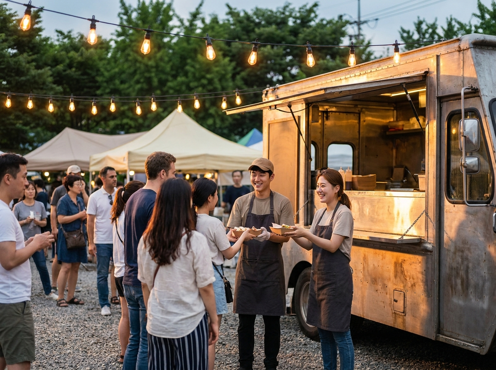
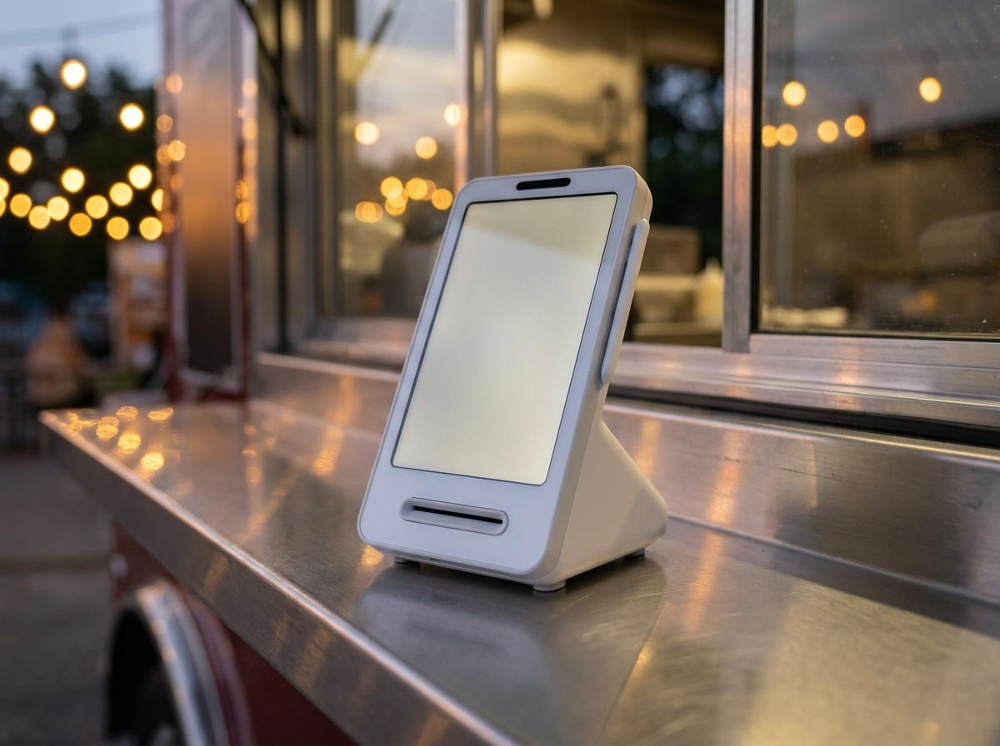
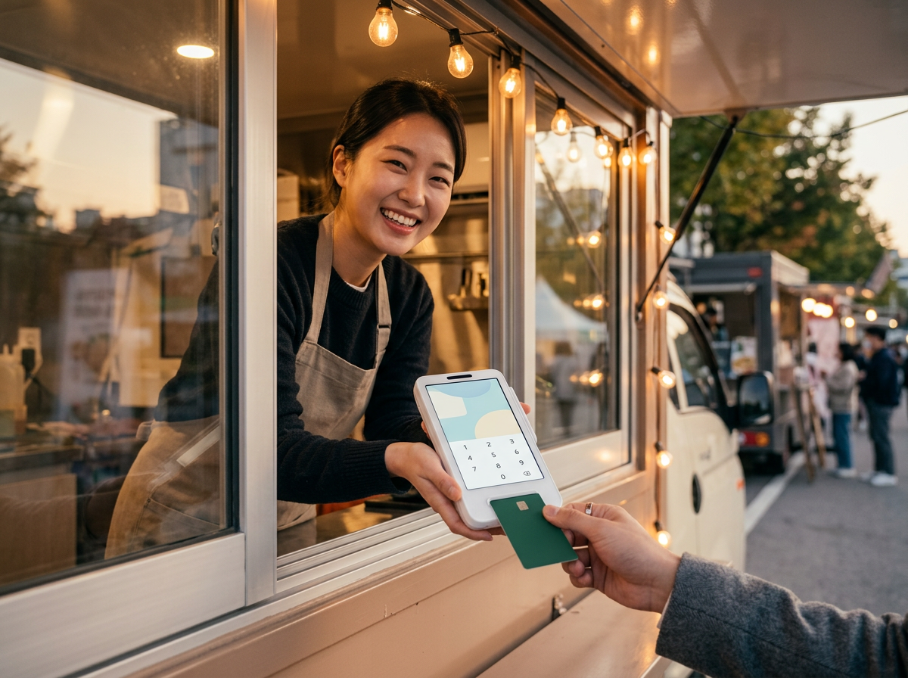

푸드트럭·플리마켓에서 카드결제 받는 법, 이렇게 준비하세요
결론부터 말씀드리면, 고정 매장이 없어도 카드결제는 얼마든지 받을 수 있습니다. 필요한 것은 큰 설비가 아니라 이동 환경에 맞는 결제 단말 하나입니다. 전원과 통신만 확보되면 푸드트럭 창구에서도, 플리마켓 매대에서도 매장과 똑같은 방식으로 결제가 끝납니다. 누리네트웍스는 수도권 매장을 직접 방문해 설치하고 관리하는 포스·결제단말 전문 업체입니다. 최근 들어 행사장과 야외 부스에서 어떻게 결제를 받아야 하느냐고 문의하시는 사장님이 부쩍 늘었습니다. 이 글에서는 이동 판매에서 결제 환경을 갖출 때 확인할 점, 그리고 행사마다 흩어지는 매출 기록을 한곳으로 모으는 방법을 정리했습니다.

고정 매장 없이 파는 방식이 늘고 있습니다
요즘 장사의 무대는 점포 안에만 있지 않습니다. 푸드트럭은 계절과 행사에 따라 자리를 옮겨 다니고, 플리마켓과 지역 축제에는 주말마다 새로운 판매자가 모입니다. 복합몰이나 백화점의 팝업스토어처럼 짧게 열었다 닫는 매장도 흔해졌습니다. 공통점은 분명합니다. 임차료 부담을 줄이고, 손님이 모여 있는 곳으로 직접 찾아간다는 점입니다.
시작 비용이 낮다는 것은 큰 장점이지만, 운영 조건은 오히려 매장보다 까다롭습니다. 자리마다 전기 사정이 다르고, 통신 상태도 들쭉날쭉합니다. 오늘 장사가 끝나면 다음 행사는 다른 동네에서 열립니다. 그래서 판매 방식은 가벼워도 결제와 기록만큼은 매장 수준으로 갖춰 두는 편이 결국 편합니다.
여기서 한 가지 먼저 짚어 둘 것이 있습니다. 푸드트럭의 영업 허가, 영업이 가능한 지정 장소, 행사 입점 조건은 지자체와 주최 측에 따라 다르게 운영됩니다. 일반화해서 말씀드리기 어려운 영역이니, 준비 단계에서 관할 지자체와 식품의약품안전처 등 공식기관의 최신 기준을 직접 확인하시길 권합니다.
준비 과정에서 의외로 뒤로 밀리는 것이 결제입니다. 야외 판매는 현금만 받아도 된다고 생각하기 쉽기 때문입니다. 그런데 손님 입장에서 보면 이야기가 달라집니다. 지갑 없이 휴대폰만 들고 나온 손님, 카드만 쓰는 손님은 줄을 서다가도 결제 방법을 확인하고 그냥 돌아섭니다. 메뉴가 마음에 들어도 결제가 막히면 판매는 성사되지 않습니다.
놓치는 것은 그 자리의 매출만이 아닙니다. 현금 위주로 팔면 하루 판매량이 기억과 메모에만 남습니다. 어떤 메뉴가 잘 나갔는지, 어느 행사장이 장사가 됐는지 숫자로 남지 않습니다. 잔돈을 준비하고 관리하는 수고, 정산할 때 금액이 맞지 않아 다시 세는 시간도 무시하기 어렵습니다. 카드결제를 받는다는 것은 곧 매출이 기록으로 남는다는 뜻입니다.
이동 판매에서 결제 환경을 갖출 때 확인할 점
야외와 이동 판매는 고정 매장과 조건이 다릅니다. 아래 항목을 미리 점검해 두시면 현장에서 당황할 일이 줄어듭니다.
| 확인 항목 | 이동 판매에서 왜 중요한가요 |
|---|---|
| 전원 확보 | 콘센트가 없는 자리 대비, 충전 상태 미리 점검 |
| 통신 환경 | 사람이 몰리는 행사장은 신호가 불안정할 수 있음 |
| 화면 시인성 | 한낮 야외에서 화면이 잘 보이는지 확인 |
| 영수증 처리 | 종이 영수증을 찾는 손님 응대 방법 준비 |
| 매출 집계 | 행사별·일자별로 판매 기록이 남는지 확인 |
이 가운데 전원과 통신은 현장에서 가장 자주 문제가 되는 두 가지입니다. 배터리로 움직이는 기기라면 영업 시작 전에 충전 상태를 확인하고, 여분 전원을 함께 챙기는 편이 안전합니다. 통신은 행사장 사정에 따라 달라지므로, 문을 열기 전에 결제가 실제로 되는지 한 번 확인해 보시길 권합니다. 조건은 장소마다 다르니 일반적인 기준으로만 참고하시면 됩니다.
의외로 자주 놓치는 것이 화면 시인성입니다. 한여름 낮의 야외는 실내보다 훨씬 밝아, 화면이 잘 보이지 않으면 금액 확인과 서명 과정에서 시간이 걸립니다. 줄이 길어지는 행사장에서는 이 몇 초가 회전율을 좌우합니다. 영수증도 마찬가지입니다. 종이 영수증을 원하는 손님이 있는지, 문자나 앱으로 대신할 수 있는지 미리 정해 두시면 응대가 매끄러워집니다.

행사장마다 흩어진 매출, 한곳으로 모으는 법
이동 판매의 진짜 어려움은 결제 순간이 아니라 그다음에 옵니다. 이번 주에는 강변 야시장, 다음 주에는 다른 동네 축제. 장소가 바뀔 때마다 매출 기록도 따로 놉니다. 수첩과 휴대폰 메모, 계좌 입금 내역이 뒤섞이면 한 달 정산에 하루가 통째로 들어갑니다.
해결은 단순합니다. 결제를 한 기기로 통일하면 기록도 한곳에 모입니다. 어느 행사장에서 받았든 같은 단말로 결제하면 판매 내역이 하나의 흐름으로 쌓입니다. 일자별 매출, 시간대별 흐름, 잘 팔린 날과 그렇지 않은 날이 숫자로 보이면 다음 행사 참여를 결정할 때 감이 아니라 근거로 판단할 수 있습니다.
이런 환경을 가볍게 시작하기 좋은 선택이 토스단말기입니다. 크기가 작아 푸드트럭 창구 선반이나 좁은 매대 위에도 무리 없이 놓입니다. 카드는 물론 여러 간편결제까지 한 대로 받을 수 있어, 손님이 어떤 방법을 내밀어도 응대가 됩니다. 매출 내역은 앱에서 확인할 수 있어 행사장에 서 있는 그 자리에서 오늘의 흐름을 볼 수 있습니다. 약정 부담 없이 시작할 수 있다는 점도 시즌 단위로 움직이는 이동 판매와 잘 맞습니다.
물론 고정 점포를 함께 열거나 규모가 커지면 포스, 테이블오더처럼 매장형 구성으로 넓혀 가는 방법도 있습니다. 다만 처음부터 크게 갖출 필요는 없습니다. 지금 필요한 만큼만 가볍게 시작하고, 장사가 자리 잡은 뒤에 늘리는 순서가 부담이 적습니다. 누리네트웍스는 정품 신제품 보증과 수도권 직영 설치·관리를 원칙으로 하며, 구성과 비용은 판매 방식과 매장 상황에 따라 달라지므로 상담 시 안내해 드립니다.

자주 묻는 질문(FAQ)
Q. 푸드트럭에도 카드 결제 단말기를 놓을 수 있나요?
놓을 수 있습니다. 창구 선반처럼 좁은 자리에도 올릴 수 있는 작은 단말이 있습니다. 다만 사업자 등록과 가맹점 신청 절차가 필요하고, 푸드트럭 영업 허가나 지정 장소 기준은 지자체마다 다르게 운영되므로 관할 지자체와 식품의약품안전처 등 공식기관에서 최신 기준을 확인하시길 권합니다.
Q. 행사장에 인터넷이 없는데 결제가 되나요?
이동통신을 이용하는 방식이라면 별도의 유선 인터넷 없이도 결제를 받는 구성이 가능합니다. 다만 사람이 많이 몰리는 장소에서는 신호가 불안정할 수 있으니, 영업 시작 전에 결제가 실제로 이뤄지는지 한 번 확인해 보시는 편이 안전합니다.
Q. 행사마다 파는 곳이 다른데 매출 정리가 될까요?
같은 단말로 결제를 받으면 장소가 달라져도 판매 내역은 한 흐름으로 쌓입니다. 일자별로 확인할 수 있어, 어느 행사가 장사가 됐는지 나중에 돌아보기 쉽습니다.
Q. 팝업스토어처럼 짧게 운영하는 경우에도 맞을까요?
짧게 운영할수록 설치 부담이 적은 구성이 유리합니다. 운영 기간과 판매 방식을 알려 주시면 그에 맞는 최소 구성을 안내해 드립니다.
어디서 파시든, 결제는 매끄럽게 받으세요
푸드트럭이든 플리마켓 매대든, 손님이 사고 싶어 하는 순간을 놓치지 않는 것이 장사의 기본입니다. 결제는 그 순간을 지켜 주는 장치이고, 동시에 하루의 성적표를 남겨 주는 기록이기도 합니다. 어떤 방식으로 파시는지, 얼마나 자주 자리를 옮기시는지 말씀해 주시면 그에 맞는 구성을 함께 찾아 드리겠습니다. 수도권은 직접 방문해 설치하고 관리해 드리니 부담 없이 문의 주세요.
- 📞 전화상담 1544-7754
- 🌐 홈페이지 nwpos.co.kr
- 📷 인스타그램 instagram.com/nurinetworkspos
- ▶️ 유튜브 youtube.com/@nurinetworks